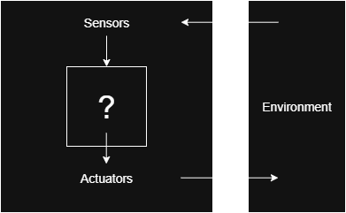

Intelligent Agents
Agents
- Man: eyes, …, hands, …
- Robots: cameras, microphones, …, wheels, “hands”, …
How agents should behave
Example: Vacuum-cleaner Agent
- Performance measures:
- Amount of dirt cleaned (there is a trap here…)
- Did it clean the floor?
- Noise
- Energy
- Time
- When should the evaluation be done?
- Is it better to have an agent that cleans (poorly) always at the same pace or one that cleans very fast and then rests a lot?
How agents should behave
As a general rule, it is better to design performance measures according to what one actually wants in the environment, rather than according to how one thinks the agent should behave |
How agents should behave
Intelligent = Rational
A rational agent acts so as to achieve the best possible outcome or, when there is uncertainty, the best expected outcome
Being rational depends on:
- An (objective) performance measure
- The agent’s prior knowledge of the environment
- The actions that the agent can perform
- The agent’s percept sequence (≈ Omniscience)
Rational Agent Definition
A rational agent, for each percept sequence, selects an action that is expected to maximize its performance measure, given the evidence provided by the percept sequence and whatever built-in knowledge the agent has |
- A rational agent should be able to learn
- A rational agent should be as autonomous as possible
Agent Example
Example: Taxi Driver Agent
Goals: Security, Velocity, Comfort, Profit…
The Structure of Agents
Agent = Architecture + Program
- Architecture = material support
- Program = function that links perceptions to actions
PAGE Descriptions
| Agent type | Perceptions | Actions | Goals | Environment |
|---|---|---|---|---|
| Medical diagnostic | Symptoms, Tests results, etc. | |||
| Satellite images classification system | Pixels | |||
| Refinery controller | Temperature, Pressure, … values |
PAGE Descriptions
| Agent type | Perceptions | Actions | Goals | Environment |
|---|---|---|---|---|
| Medical diagnostic | Symptoms, Tests results, etc. | Questions, Treatments, … | To cure the patient, Minimal costs | Patient, Hospital |
| Satellite images classification system | Pixels | |||
| Refinery controller | Temperature, Pressure, … values |
PAGE Descriptions
| Agent type | Perceptions | Actions | Goals | Environment |
|---|---|---|---|---|
| Medical diagnostic | Symptoms, Tests results, etc. | Questions, Treatments, … | To cure the patient, Minimal costs | Patient, Hospital |
| Satellite images classification system | Pixels | Print image classification | Correct classification | Satellite images |
| Refinery controller | Temperature, Pressure, … values |
PAGE Descriptions - Complete
| Agent type | Perceptions | Actions | Goals | Environment |
|---|---|---|---|---|
| Medical diagnostic | Symptoms, Tests results, etc. | Questions, Treatments, … | To cure the patient, Minimal costs | Patient, Hospital |
| Satellite images classification system | Pixels | Print image classification | Correct classification | Satellite images |
| Refinery controller | Temperature, Pressure, … values | Open, close valves… | Maximize security | Refinery |
Agent Types
- Simple reflexive agents
- Model-based reflex agents
- Goal-based agents
- Utility-based agents
Simple Reflex Agents
- Just react to the most recent perception
- Answer always the same way to the same perceptions
- Don’t possess general knowledge about the domain
- Don’t have the ability to adapt to new environments
- They are simple but they turn out to be of limited intelligence
Simple Reflex Agents - Architecture

Model-based Reflex Agents
They are reflexive agents…
However, they maintain an internal state that depends on the percept history and thereby reflects at least some of the unobserved aspects of the environment
In order to maintain the internal state, they need:
- Information about how the world evolves
- Information about how their actions affect the world
Model-based Reflex Agents - Architecture

Goal-based Agents
These agents can use information about the consequences of their actions in order to choose an action that allows them to reach the goal
This choice may be complicated when several actions must be considered in order to reach the goal
In these cases it is necessary to use search or planning methods
Goal-based Agents - Architecture

Utility-based Agents
Usually, there are several ways of reaching a goal, but some are better than others…
This type of agents uses a utility function that maps each state into a real number reflecting the degree of success reached by the agent
After computing these values, the agent chooses the action that leads to the best expected utility
Utility-based Agents - Architecture

Environments
The study of the properties of the environments in which agents must live is important since they can influence the type of agent that one should build
Properties of Environments
Fully observable vs. Partially observable
If the agent’s sensors give it access to the complete state of the environment at each point in time, then we say that the environment is fully observable
A fully observable environment is more convenient because the agent does not need to save information about the environment’s state
Properties of Environments
Deterministic vs Stochastic
The environment is deterministic if the next state is completely defined by the current state and the action executed by the agent
If an environment is partially observable, it may seem stochastic
Properties of Environments
Episodic vs. Sequential
In an episodic environment the agent’s experience is divided into atomic episodes, so that subsequent episodes do not depend on the actions done in previous episodes
Episodic environments are simpler than sequential ones because the agent does not need to think ahead (taking into account the consequences of its actions in the future)
Properties of Environments
Static vs. Dynamic
An environment is dynamic if it may change while the agent “thinks”
It is easier to deal with static environments because the agent must not keep looking at the environment while it is deciding which action to take
If the environment does not change while the agent deliberates but its performance score does, we say that the environment is semi-dynamic
Properties of Environments
Discrete vs. Continuous
- If there is a clearly defined number of perceptions and actions, we say that the environment is discrete
- If the number of perceptions or actions can vary, then the environment is continuous
Environment Properties Examples
| Environment | Fully observable | Deterministic | Episodic | Static | Discrete |
|---|---|---|---|---|---|
| Chess | Yes | Yes | No | Yes | Yes |
| Chess with a clock | Yes | Yes | No | Semi | Yes |
| Poker | No | No | No | Yes | Yes |
| Taxi driving | No | No | No | No | No |
| Image analysis system | Yes | Yes | Yes | Yes | No |
Summary
- Agents interact with environments through sensors and actuators
- Rational agents maximize expected performance
- Different agent architectures suit different problem types
- Environment properties determine appropriate agent design
- Understanding these concepts is crucial for AI in games
AIAG - Introduction to AI - Games and Multimedia